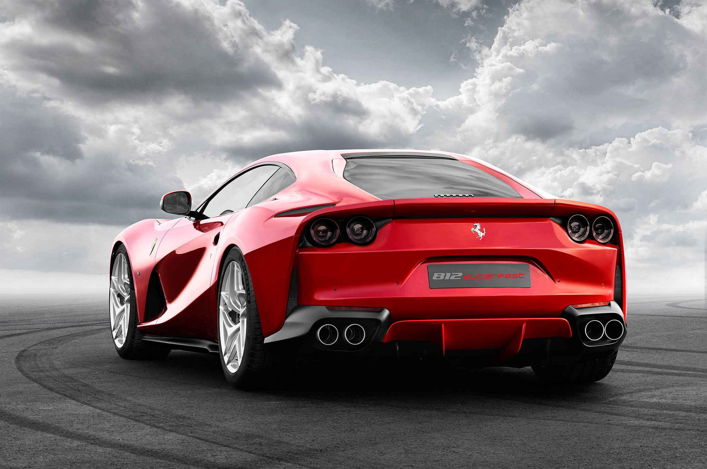
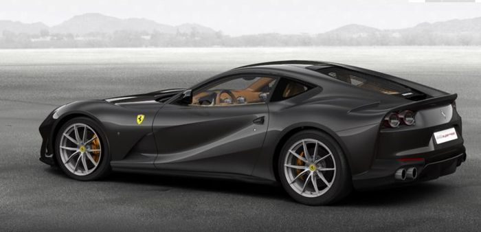

Ferrari 812 Superfastlà một động cơ giữa, động cơ bánh sau lớn do nhà sản xuất xe thể thao Ý sản xuất, ra mắt tại Geneva Motor Show 2017. Chiếc 812 Superfast là chiếc kế thừa cho chiếc F12berlinetta.
Chiếc xe có động cơ V12 6.5 lít lớn hơn so với chiếc 6.3 lít sử dụng trong chiếc F12berlinetta. Động cơ sản xuất 800 PS (588 kW, 789 mã lực ) ở vòng tua 8.500 vòng / phút và mô men xoắn 718 Nm (530 lbf · ft) ở 7.000 vòng / phút. [8] Động cơ V12 812 Superfast là, vào năm 2017, động cơ sản xuất động cơ hút tự nhiên mạnh nhất từng được sản xuất. Chiếc xe này còn có tốc độ tối đa là 221 mph (355 km / h) với thời gian gia tốc 0-62 mph (0-100 km / h) là 2.9 giây. Chiếc xe có tỷ lệ điện / trọng lượng là 0,52 mã lực (0,39 kW) / kg.
Thiết kế được lấy cảm hứng từ chiếc F12berlinetta, mặc dù nó có được một số gợi ý phong cách mới như đèn pha LED đầy đủ, lỗ thông khí trên nắp ca-pô, đèn đuôi tròn quad, và bộ khuếch tán phía sau thân xe. Chiếc xe có chiều dài 4,657 mm (183,3 inch), rộng 1,971 mm (77,6 inch) và cao 1,276 mm (50,2 inch), trong khi trọng lượng khô của nó là 1.525 kg (3362 lbs).
